ConnectMyTours Admin User Guide
A practical, feature-by-feature guide to the ConnectMyTours admin panel — what each screen does, why it exists, and how to use it. This guide documents the panel exactly as it is built today; it is not a plan for future work.
Signing In
What is it?
The admin login screen at /admin/login is the single entry point to every feature in this guide. Access is managed centrally — there is no self-service sign-up; every account is created for you by an administrator.
Why do we use it?
Every screen behind the login is scoped to your account's permissions, so the system needs to know who you are before showing you anything. Sign-in also powers the per-account activity trail visible on your own Security page.
How to use it
- Go to
/admin/loginand enter the email and password given to you by your administrator. - Click Sign in. On success you land on the Dashboard.
- If you forget your password, click Forgot password?, enter your email, and click Send reset link — a reset email is sent if that address has an account. You'll see a confirmation message either way (the screen does not reveal whether an email exists, as a normal security precaution).
- You can also change your password any time while signed in, from the profile menu — see Security.
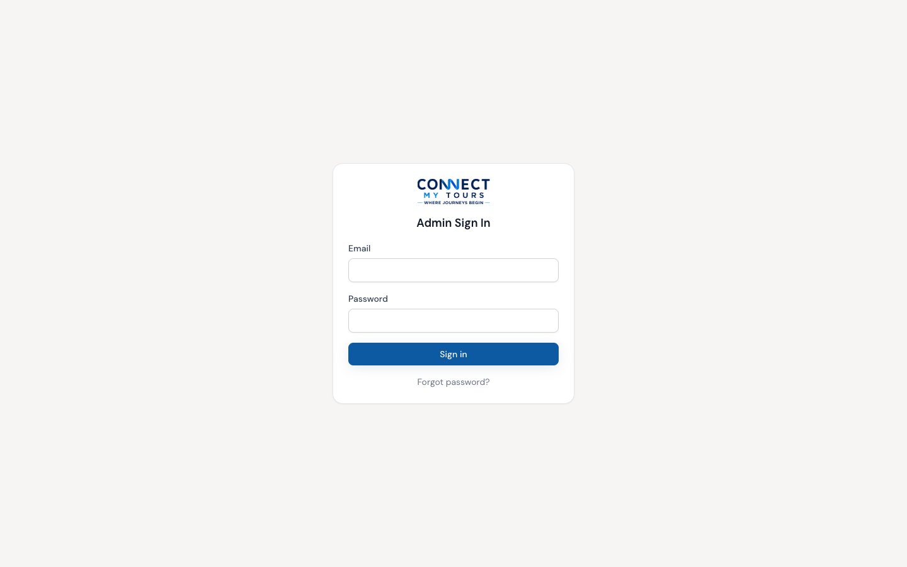
The admin sign-in screen.
Understanding the Layout
What is it?
Every screen behind login shares the same shell: a header across the top, a navigation rail on the left, and the page content in the middle.
How to use it
- Header — the ConnectMyTours logo (click it to return to the Dashboard from anywhere), the How to Use link that opens this guide, a Go to Website link that opens the public ConnectMyTours site in a new tab (the Admin Panel stays open), and your account avatar on the far right.
- Navigation rail — a narrow strip of icons on the left, one per section (Overview, CRM, Inventory, CMS, Marketing, Reports, Account, Settings). Hover over it and it widens briefly to show each section's label. Click any icon to jump straight to that section's first page.
- Permanent submenu — next to the rail, the list of pages inside whichever section you're currently in (for example, inside CRM you'll see Leads, Quotations, Bookings, and so on). This updates automatically as you navigate.
- On mobile/tablet, the rail and submenu collapse into a single ☰ menu button in the header.
- You will only ever see the sections and pages your account has permission for — see Roles & Permissions.
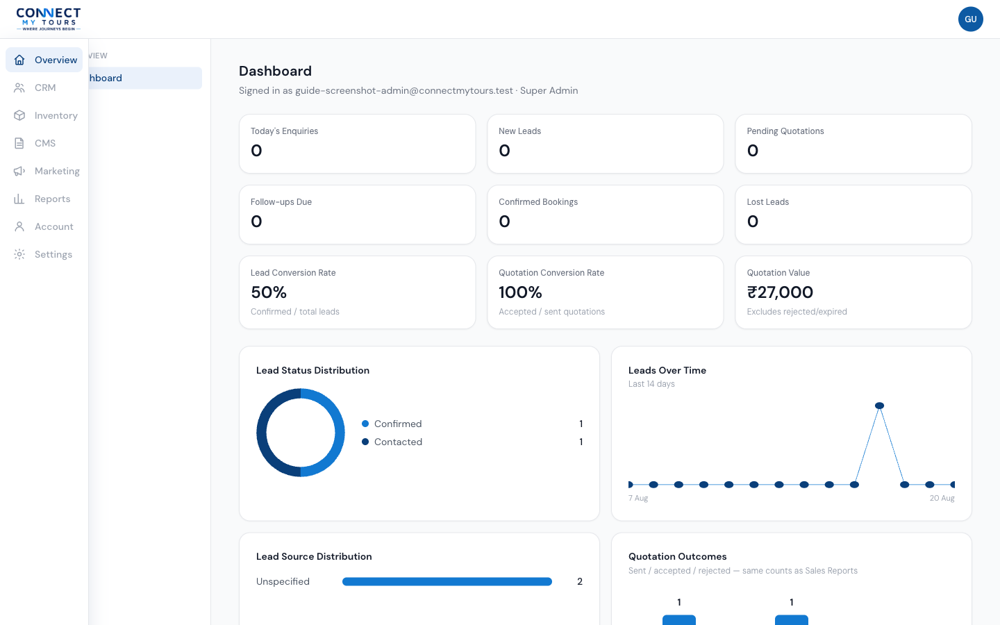
The navigation rail widens on hover; the submenu next to it always shows the current section's pages.
Dashboard
What is it?
The Dashboard is the landing page after sign-in. For roles with reporting access, it shows nine key numbers and four charts summarising the business right now. For roles without reporting access, it shows a simple welcome message instead.
Why do we use it?
It's a single-glance snapshot of the sales pipeline and marketing activity, so an Admin/Manager doesn't need to open every CRM and Reports page individually to know how the day is going.
How to access it
Sign in — the Dashboard is the default landing page — or click the ConnectMyTours logo in the header from anywhere.
How to use it
- The nine cards along the top are: Today's Enquiries, New Leads, Pending Quotations, Follow-ups Due, Confirmed Bookings, Lost Leads, Lead Conversion Rate (confirmed ÷ total leads), Quotation Conversion Rate (accepted ÷ sent quotations), and Quotation Value (excludes rejected/expired quotations).
- Lead Status Distribution — a donut chart of every lead's current status.
- Leads Over Time — a line chart of new leads across the last 14 days.
- Lead Source Distribution — a bar chart of where leads are coming from (see Tags & Sources).
- Quotation Outcomes — sent / accepted / rejected counts, matching the same numbers shown on Sales Reports.
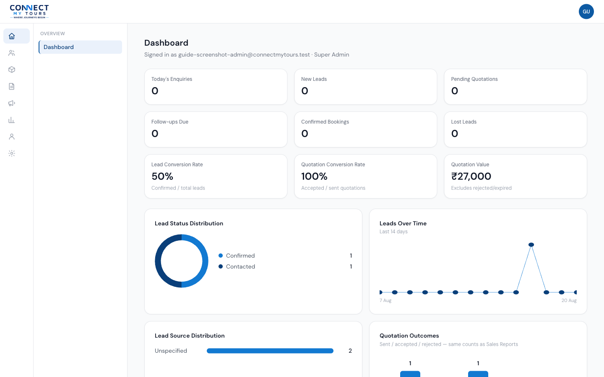
The Dashboard for a role with reporting access.
Leads
What is it?
A lead is one customer enquiry — whether it arrived through the public website's enquiry form or was entered manually by staff. Leads are the starting point of the entire sales pipeline: a lead can go on to have quotations and, eventually, a booking.
Why do we use it?
It gives every enquiry a single record staff can track, assign, prioritise, and follow up on, instead of enquiries living in scattered messages or spreadsheets.
How to access it
From the nav rail, hover CRM and click Leads, or click any lead link elsewhere in the panel. Requires view_leads_own (your assigned leads) or view_leads_all (every lead).
How to use it
- The list shows every lead's enquiry number (format
CMT-YYYY-NNNN), customer, package/travel date, status, priority, who it's assigned to, and when it was created. - Filter by status, or by Assigned to me / Unassigned / All leads, or search by name, phone, or enquiry number.
- Click New Lead (if you have
create_leads) and fill in the customer's details, trip details (destination, dates, travellers, budget), and pipeline info (priority, source, who it's assigned to). Only Name and Phone are required — everything else can be filled in later. The customer record is automatically matched or created by phone number. - Open a lead to see its full detail page: a Pipeline card at the top to change Status, Priority, or Assignment, and a tabbed area below for Quotations, Notes, Follow-ups, Tasks, Tags, and Activity.
- Click New Quotation on a lead's page to start a quotation for that lead — see Quotations.
Lead status values
| Status | Meaning |
|---|---|
| New | Just created, not yet contacted. |
| Contacted | Staff have reached out. |
| Quotation Prepared | A quotation exists but hasn't been sent. |
| Quotation Sent | A quotation has been sent to the customer. |
| Follow-up | Waiting on the customer, a scheduled follow-up is in play. |
| Negotiation | Actively discussing terms/pricing. |
| Confirmed | The customer has booked. |
| Not Interested / Lost / Cancelled | The three ways an enquiry closes without a booking. |
assign_leads, you can hand any lead to any staff member. If you only hold edit_leads, you can pick up an unassigned lead for yourself or drop your own, but you cannot reassign a lead to someone else — the system enforces this and will refuse the change.
Leads are never deleted from the system — closing one out means moving it to Not Interested, Lost, or Cancelled.
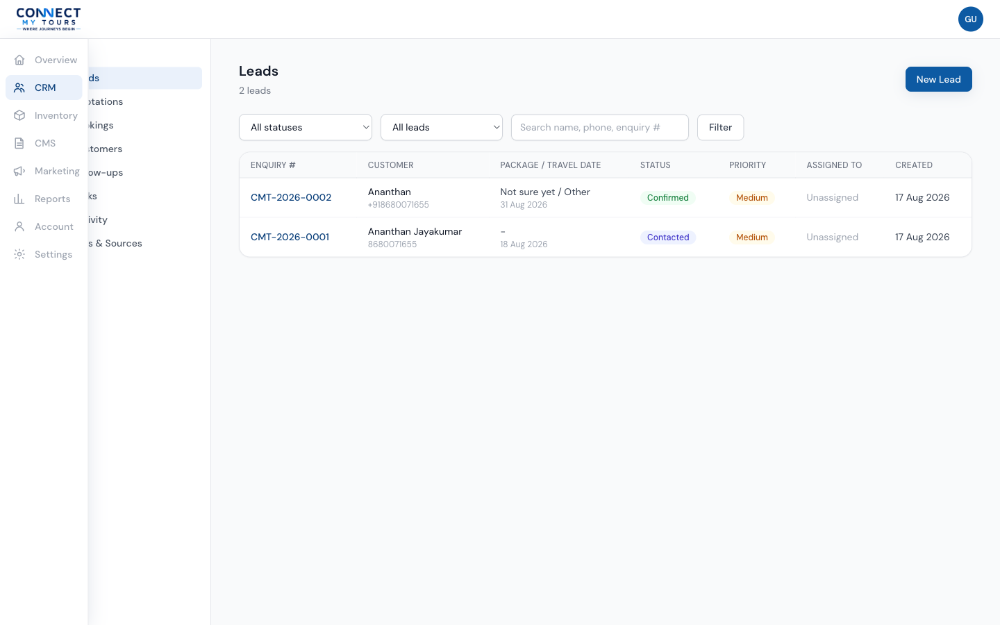
The Leads list.
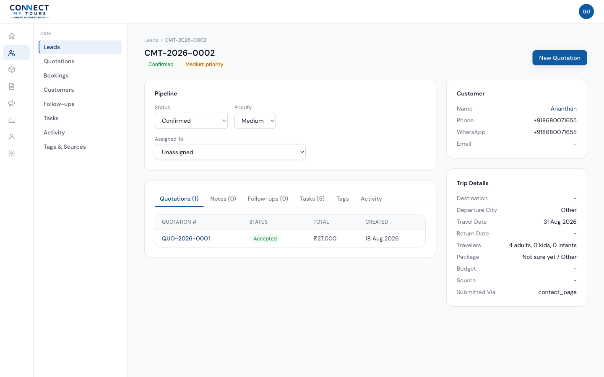
A lead's detail page, with the Pipeline card and tabs.
Quotations
What is it?
A quotation is a priced proposal built from one or more packages, always tied to a specific lead. It can be shared with the customer via a public link and, once accepted, becomes the basis for a booking.
Why do we use it?
It turns a lead's interest into a concrete, itemised offer with real pricing, and keeps a full history of every version sent to the customer.
How to access it
From the nav rail, CRM → Quotations, or via a lead's New Quotation button. Requires view_quotations_own or view_quotations_all; creating one requires create_quotations.
How to use it
- Start from a lead (click New Quotation on the lead's page), or search for the lead from the Quotations list's New Quotation screen.
- Click Add Package to search and add packages. Each line shows the package's Rack and B2B prices; you can override with a Custom Price and apply a Discount % or Discount ₹ (setting one clears the other). The final price is the reference price minus the discount, never below zero.
- Set an overall Quotation Discount if needed, plus Valid Until, customer-facing Notes, and Terms & Conditions.
- Click Create Quotation. It starts as Draft — you can keep editing the items freely while it's a draft.
- When ready, click Send via WhatsApp on the quotation's detail page. A successful send moves the status to Sent and shares the quotation's public link with the customer. (See the note on WhatsApp delivery below.)
- Track activity in the Messages tab (system events, link opens, and your own notes), review/edit details in the Details tab, and see past versions in the Revisions tab.
- Once the customer accepts (status becomes Accepted), a Booking card appears on the quotation — see Bookings.
Quotation status & allowed transitions
Unlike Leads, quotation status changes are enforced by the system in this order — you cannot skip ahead or jump backwards through the dropdown. A Rejected or Expired quotation (but not an Accepted one) can be reopened as a new draft via Create a revision, which archives the current version into the Revisions tab and lets you edit again under the same quotation number and share link.
/quote/{token} that the customer can open without logging in. Opening it automatically records a view and flips a Sent quotation to Viewed. You'll find the copyable link in the Share Link card on the quotation's page.
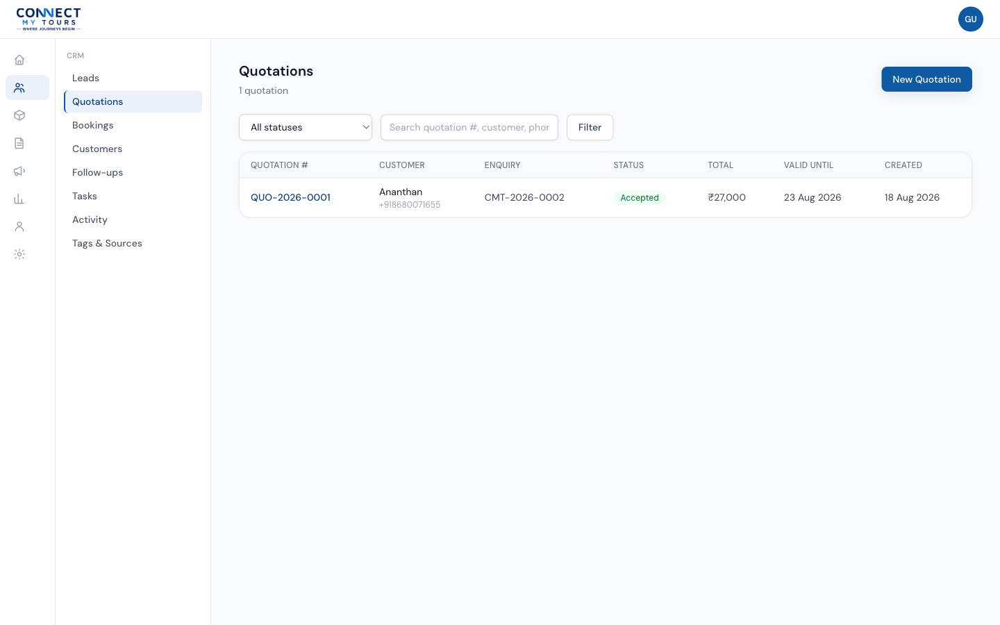
The Quotations list.
Bookings
What is it?
A booking is a confirmed trip, created from an accepted quotation. It carries the trip dates and tracks payment separately from booking status.
Why do we use it?
It's the record of record for a paying customer's actual trip — travel dates, total owed, and how much has been paid so far.
How to access it
From the nav rail, CRM → Bookings. Bookings can only be created from an accepted quotation's own page, via the Create Booking form (requires create_bookings) — there is no standalone "new booking" button on the Bookings list.
How to use it
- On an Accepted quotation, fill in Travel Start Date (required), Travel End Date, and Notes, then click Create Booking. The total amount is copied from the quotation automatically. Only one booking can exist per quotation.
- Open a booking to see its Status card, Payment card, and editable Travel & Notes.
- Record payments in the Payment card: enter Amount Paid (capped at the total) and set a Payment Status, then Save. This is manual bookkeeping — there is no payment gateway wired in, so nothing is calculated for you automatically.
Booking status & allowed transitions
Like quotations, booking status is enforced forward-only: Pending → Confirmed or Cancelled; Confirmed → Completed or Cancelled; Completed and Cancelled are final. The first time a booking becomes Confirmed, its lead's status is automatically nudged to Confirmed too.
Payment status values
Pending Partial Paid Refunded — chosen manually by staff alongside the amount paid; nothing is derived automatically from the amount.
Bookings, like leads, are never deleted from the system.
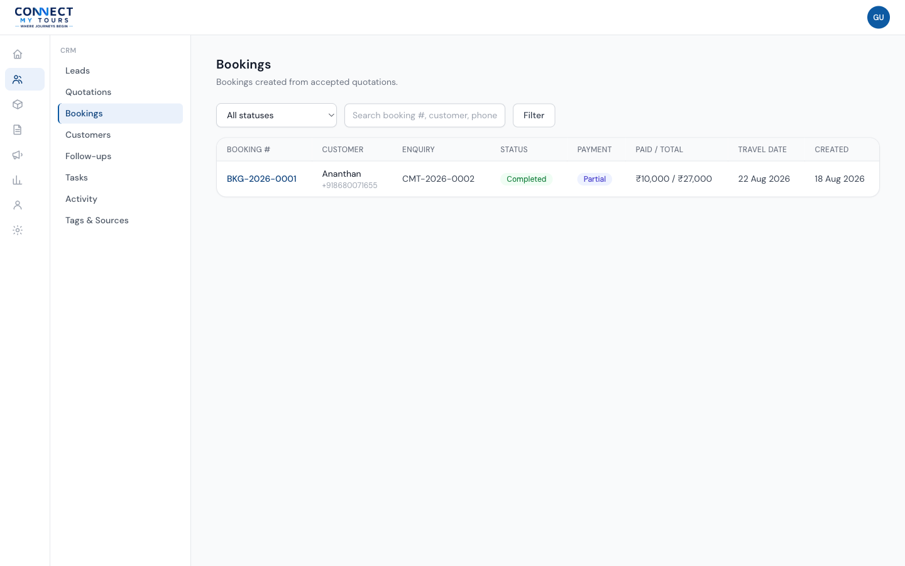
The Bookings list.
Customers
What is it?
A customer record holds a person's contact details, kept separate from any one lead so the same person's enquiries and bookings over time all connect to one record.
How to access it
Nav rail → CRM → Customers. Requires manage_customers (a single permission covers viewing, creating, and editing).
How to use it
- Customers are usually created for you automatically — the first time someone with a given phone number submits an enquiry or is entered as a new lead, a matching customer record is found or created behind the scenes.
- You can also click New Customer to add one manually, independent of any lead.
- Open a customer to edit Name, Phone, WhatsApp, Email, Location, and internal Notes, and to see every lead tied to them.
Follow-ups
What is it?
A follow-up is a scheduled reminder to contact one lead at a specific date/time, with optional notes — lighter-weight than a Task, and specifically about staying in touch with a customer.
How to access it
Nav rail → CRM → Follow-ups for the cross-lead inbox, or the Follow-ups tab on any individual lead. Requires manage_followups.
How to use it
- From a lead's Follow-ups tab, set Scheduled for and optional Notes, then click Schedule Follow-up.
- The Follow-ups inbox groups every follow-up across all leads into three tabs: Upcoming, Overdue, and Completed.
- Click Mark complete on any pending follow-up once you've made contact — no note is required at that point.
Tasks
What is it?
A typed, assignable to-do tied to a lead — for example "Call the customer" or "Request payment" — distinct from a Follow-up in that it has a type, priority, and assignee.
How to access it
Nav rail → CRM → Tasks for the cross-lead inbox, or a lead's Tasks tab. Requires manage_tasks.
How to use it
- From a lead's Tasks tab, choose a Type (Call, Send Quotation, Follow-up, Request Payment, Confirm Booking), a Due date/time, Priority, and who to Assign To, then click Add Task.
- The Tasks inbox lists every task across all leads, defaulting to open tasks (everything except Cancelled); change the status filter to see a specific status.
- Update a task's status directly from the inbox's inline dropdown: Pending In Progress Done Cancelled — any status can be set at any time, there's no enforced order.
Activity
What is it?
A read-only, system-generated timeline of everything that's happened across every lead you can see — status changes, assignments, quotations created/sent, bookings created, payments recorded. It's the same feed shown on each lead's own Activity tab, merged across all leads.
How to access it
Nav rail → CRM → Activity. Requires view_leads_own or view_leads_all.
How to use it
Just scroll — it's the most recent 100 events, newest first, with no filters. Click any enquiry number to jump to that lead.
Tags & Sources
What is it?
Two shared catalogs used across the pipeline: Tags are free-form coloured labels staff can attach to any lead (e.g. HOT, VIP, Family), and Sources are the referral/marketing channels a lead can be attributed to (e.g. Google, Facebook, Referral).
How to access it
Nav rail → CRM → Tags & Sources. Requires manage_lead_metadata.
How to use it
- Add a tag with a Name and a Color, or add a source with just a Name. Both support deleting an existing entry.
- Tags are then toggled on/off per lead from the Tags tab on that lead's page. Source is chosen from a dropdown on the lead form.
Destinations
What is it?
A destination (e.g. "Kerala", "Goa") that packages can be tagged with, used to organise and filter the Packages list.
How to access it
Nav rail → Inventory → Destinations. Viewing requires view_inventory or manage_packages; editing requires manage_packages.
How to use it
- Click New Destination, enter a Name (the URL Slug is derived automatically, editable if needed), an optional Description, and a Status of Active or Inactive.
- A package's Destination field is optional and simply references one of these entries.
Categories
What is it?
A package category (the same shape as a Destination — Name, Slug, Description, Active/Inactive) used to classify and filter packages, e.g. by trip style.
How to access it
Nav rail → Inventory → Categories. Same permission rules as Destinations.
Packages
What is it?
A tour package — the product that gets quoted, booked, and sold. This is the most detailed record in Inventory, with its own set of tabs.
Why do we use it?
It's the shared source of pricing and content that both Quotations (via the package picker) and the public website draw from.
How to access it
Nav rail → Inventory → Packages. Requires manage_packages to open a package's detail tabs (list view only needs view_inventory or manage_packages); the SEO tab additionally needs manage_seo.
How to use it
A package's detail page has up to five tabs:
- Details — Name, Slug, Destination, Category, free-text Package Type (e.g. darshan, VIP, group, honeymoon), Room / Category, Duration (days/nights), Status (Active/Inactive), Short Description, and two checkboxes: Featured package and Available for booking.
- Content — the full Description, a day-by-day Itinerary builder (add/remove days, each with a title and description), and Inclusions & Exclusions (one item per line).
- Pricing — add any number of price rows of type Rack Rate, B2B Rate, Custom, or Seasonal, each with a label, price, currency, an optional validity window, and an Active checkbox.
- Images — attach images from the Media Library, mark one as the cover image (used as the thumbnail), and reorder with the ← / → arrows.
- SEO — the same shared SEO fields used on Pages and Blog posts (see Pages).
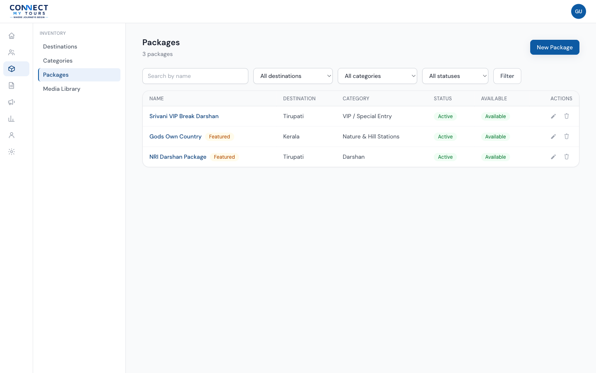
The Packages list.
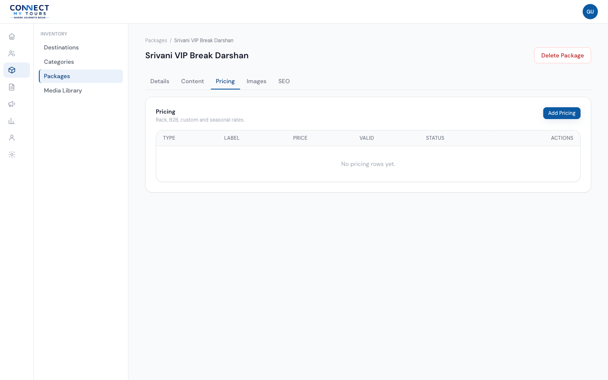
A package's Pricing tab — Rack, B2B, Custom, and Seasonal rates.
Media Library
What is it?
The shared image store used by Packages, Destinations, CMS pages, Banners, Blog, and Testimonials. Files are organised into areas: Packages, Destinations, Banners, Blog, Gallery, Pages.
How to access it
Nav rail → Inventory → Media Library, or the picker dialog wherever an image field appears elsewhere in the panel. Viewing requires view_inventory, manage_media, or manage_packages; uploading/editing/deleting requires manage_media.
How to use it
- Accepted file types: JPEG, PNG, WebP, GIF, or SVG, up to 8MB each. Regular photos are automatically converted to WebP for smaller file sizes; SVG uploads are scanned and stripped of any embedded scripts for safety before they're stored.
- Click Upload, choose an area, and select one or more files.
- Click Edit on any file to rename it or set its Alt text (used for accessibility and SEO).
- Click Delete to remove a file — if it's currently used as a package image, you'll be warned how many places will lose that image.
- Filter the library by area using the pills at the top.
Pages
What is it?
A standalone page on the public website (other than blog posts), built out of content blocks via the Page Builder — see Page Builder. The homepage itself is just one special page in this same list.
How to access it
Nav rail → CMS → Pages. CMS access is only granted to the Content Manager role (and Super Admin). Viewing requires manage_pages or publish_pages; publishing specifically requires publish_pages.
How to use it
- Click New Page, enter a Title and Slug. It's created as a Draft with no content yet — you add sections afterward from the Page Builder.
- On the page's detail screen, click Open Page Builder to add and edit content — see Page Builder.
- The Details card lets you edit Title, Slug, and Status (Draft / Published / Archived).
- If you have
manage_seo, an SEO card lets you set SEO Title, Meta Description, Canonical URL, Open Graph title/description/image, and whether the page is indexable by search engines.
Status can be changed to any of the three values at any time from the dropdown — there's no enforced order the way there is for Quotations or Bookings. If your account has manage_pages but not publish_pages, you can save drafts but the system will not let you publish.
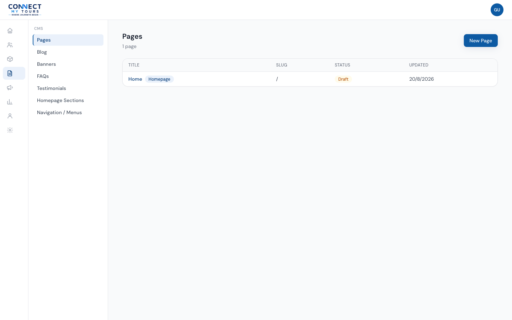
The Pages list.
Page Builder
What is it?
A block-based editor for building a page's content out of reusable sections — hero banners, text, image galleries, testimonials, FAQs, and more — without writing code.
How to use it
- Choose a block type from the Add Block panel and click Add Block. It's added to the bottom of the page, empty.
- Click Edit on a block to fill in its fields, then Save Content. Every edit and reorder saves immediately — there's no separate "Save Page" step.
- Use the ↑ / ↓ buttons to reorder blocks, Enable/Disable to hide a block without deleting it, and Remove to delete it permanently (with a confirmation prompt).
- Optionally add a Revision Note and click Save Revision to snapshot the current set of blocks. Past revisions can be rolled back to — rolling back replaces the current blocks with that revision's, but does not change the page's Title or Status.
- Publish the page itself (see Pages) once its content is ready — the Page Builder has no separate visual preview, so check the page live on the site after publishing.
Available block types
| Block | What it's for |
|---|---|
| Hero | Large banner with heading, subheading, background image, and a button. |
| Rich Text | A block of body text. |
| Image | A single image with alt text and caption. |
| Image + Text | Image alongside a heading and body text, left or right. |
| Two Column | Two independent text columns side by side. |
| Three Column Cards | A row of cards (title, description, image, link). |
| Package Listing | Intended to show packages, optionally filtered by destination. |
| Destination Listing | Intended to show a set of destinations. |
| CTA | A heading, short text, and a call-to-action button. |
| Banner | A single promotional image with a link. |
| Gallery | A grid of images with captions. |
| Testimonials | Pulls a set number of active testimonials automatically. |
| FAQ | Pulls FAQs, optionally filtered by category. |
| Statistics | A row of label/value stats. |
| Features / Benefits | A list of features, each with a title, description, and icon. |
| Video | An embedded video by URL, with a caption. |
| Contact / Enquiry Form | Embeds the site's enquiry form. |
| WhatsApp CTA | A button that opens WhatsApp with a pre-filled message. |
| Custom HTML | Raw HTML for anything not covered above. |
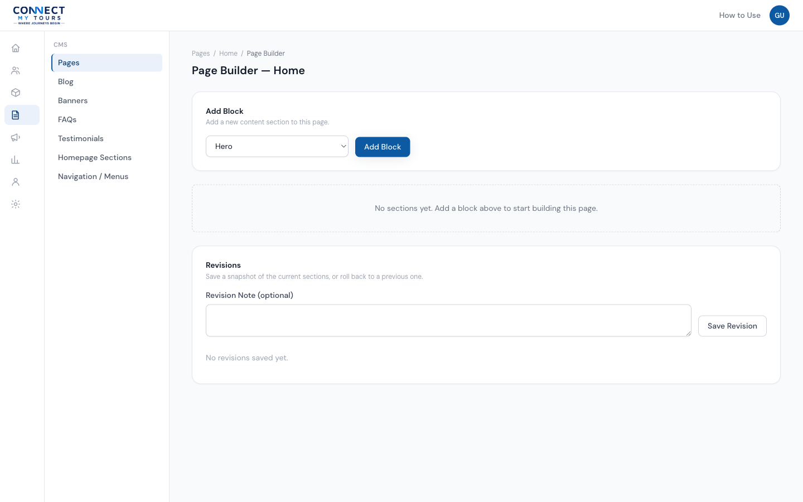
The Page Builder for the homepage.
Blog
What is it?
Blog posts for the public website — Title, Slug, an optional single Category, an Excerpt, a Body, an optional Featured Image, and tags.
How to access it
Nav rail → CMS → Blog. Requires manage_blog or publish_blog; publishing specifically requires publish_blog.
How to use it
- Click New Post and fill in Title, Slug, Category, Excerpt, and Body. It's created as a Draft; the Featured Image and Tags can be set after creating it, from the edit screen.
- The Body field is a plain text/HTML box — it is not a rich-text (WYSIWYG) or Markdown editor.
- Use Categories & Tags from the Blog list to manage the shared category and tag lists (name-only, add/delete).
- Set Status to Published when ready (requires
publish_blog).
Banners
What is it?
Promotional banners with an image, heading, description, a call-to-action button/link, and an optional scheduling window.
How to access it
Nav rail → CMS → Banners. Requires manage_banners.
How to use it
- Click New Banner and fill in Heading, Description, CTA Text/Link, an Image, and optional Start/End Date. Status defaults to Inactive until you switch it on.
- Reorder banners with ↑ / ↓. Deleting is permanent — there's no separate deactivate step, though you can also just set Status to Inactive.
- Each banner's list row shows a computed Live / Scheduled / Expired / Inactive state based on its dates and status, so you can see at a glance which banners are actually showing.
FAQs
What is it?
A flat list of question/answer pairs shown on the website (and pullable into a page via the Page Builder's FAQ block). Each entry has an optional free-text Category used purely to filter which FAQs a given FAQ block shows.
How to access it
Nav rail → CMS → FAQs. Requires manage_faqs.
How to use it
Add a Question and Answer (and optional Category) from the form at the top; reorder with ↑ / ↓; Edit or Delete any existing entry. Unlike Pages and Blog, FAQs have no Draft/Published status — an FAQ is either present or deleted.
Testimonials
What is it?
Customer reviews shown on the site, with a Customer Name, Review text, optional 1–5 star Rating, and optional Photo.
How to access it
Nav rail → CMS → Testimonials. Requires manage_testimonials.
How to use it
Click New Testimonial, fill in the fields, and set Status to Active to make it eligible to appear. Reorder with ↑ / ↓; Delete removes it permanently.
Homepage Sections
What is it?
Not a separate tool — this is simply a direct shortcut into the Page Builder for the one page marked as the homepage. "Controlling the homepage" means the exact same add/edit/reorder/enable/disable workflow described under Page Builder, applied to that one page.
How to access it
Nav rail → CMS → Homepage Sections — it takes you straight into that page's Page Builder. Same permissions as Pages.
Navigation / Menus
What is it?
Editable navigation menus for the public site's header and footer, so links can be changed without a code deployment.
How to access it
Nav rail → CMS → Navigation / Menus. Requires manage_menus.
How to use it
- Click New Menu, give it a Name and a Location (Header, Footer, or Custom).
- Open a menu to add items: a Label, a URL, an optional Parent Item (menus support one level of nesting — top-level items and their direct children only), and an "Open in new tab" checkbox.
- Reorder items with ↑ / ↓ (reordering is scoped to items under the same parent). Deleting a parent item also deletes its children.
Follow-up Automation
What is it?
A rules engine that, once WhatsApp is connected, would automatically send morning and evening follow-up WhatsApp messages to leads sitting in chosen statuses, up to a configured number of messages per lead.
How to access it
Nav rail → Marketing → Follow-up Automation. Requires manage_whatsapp_automation.
How to use it
- Set the engine's Status (Active / Paused / Stopped), a Follow-up Duration in days, Morning and Evening send times, a Max Messages per Lead cap, and which lead statuses are eligible, then click Save Settings.
- The Per-Lead Automation State table below shows every tracked lead's own automation status (Active / Paused / Stopped / Completed), how many messages it's had, and — if stopped — why (e.g. "Customer booked", "Lead lost", "Max messages reached"). You can override a single lead's state from its row.
The engine stops automatically for a lead the moment a booking is confirmed, the lead is marked Not Interested/Lost/Cancelled, the customer opts out by replying, the message cap is reached, or the follow-up duration expires.
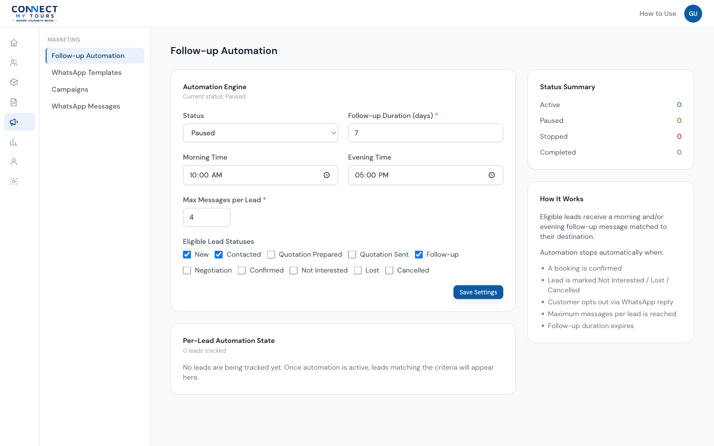
Follow-up Automation settings.
WhatsApp Templates
What is it?
Reusable message templates the system picks from automatically depending on why it's sending a message (enquiry confirmation, quotation, morning/evening follow-up), or that staff choose manually for a Campaign.
How to access it
Nav rail → Marketing → WhatsApp Templates. Requires manage_whatsapp_templates to create/edit (viewing also allowed with either WhatsApp Messages permission).
How to use it
- Click New Template and set a Name, a Purpose (Enquiry Confirmation / Quotation / Morning Follow-up / Evening Follow-up / Campaign / Manual), a Category (Utility / Marketing / Authentication), and the Body Text — use
{{1}},{{2}}, etc. for variables, numbered in order starting from 1. - Optionally set Header Text, Footer Text, and a Provider Template Name matching the name approved in Meta's WhatsApp Business Manager.
- When sending, the system uses the oldest active template matching the required Purpose. There's no hard delete — the row action instead Deactivates a template.
Campaigns
What is it?
A one-time or scheduled bulk WhatsApp send to a group of leads matching a status filter, using a chosen template.
How to access it
Nav rail → Marketing → Campaigns. Requires manage_whatsapp_campaigns to create/send.
How to use it
- Give it a Name, choose a Template, optionally set a Lead Status Filter (comma-separated, e.g.
new, contacted, follow_up— defaults to that same set if left blank), and optionally a Schedule At date/time. - The matching leads become the campaign's recipient list at creation time, shown as a count.
- Click Send on a Draft campaign to send immediately. Recipients who've opted out of WhatsApp or have no phone number are automatically skipped.
- If Schedule At is set, a scheduled check (run periodically on the server) sends the campaign automatically once that time passes — this runs independently of the Follow-up Automation engine's own Active/Paused/Stopped setting.
Status values: Draft Sending Completed Partially Failed Failed. Deactivate is available on any campaign that hasn't finished — note that it sets the campaign's status to Failed rather than a separate "cancelled" state.
WhatsApp Messages
What is it?
A read-only log of every WhatsApp message the system has attempted to send — from enquiry confirmations, quotations, follow-ups, and campaigns alike.
How to access it
Nav rail → Marketing → WhatsApp Messages. Requires either WhatsApp Messages permission (Sales Staff only see messages tied to their own assigned leads; Admin/Manager see everyone's).
How to use it
Search by enquiry number or phone. Each row shows the message type, recipient, a truncated body (hover for the full text), and a status: Queued Sent Delivered Read Failed.
Lead Reports
What is it?
Six breakdown tables of every lead, sliced a different way each time.
How to access it
Nav rail → Reports → Lead Reports. Requires view_reports.
How to use it
Read the six tables: Date-wise (by day, IST), Source-wise, Destination-wise, Package-wise, Staff-wise (assigned staff), and Status-wise. There are no interactive filters on this page — it's a fixed, comprehensive breakdown.
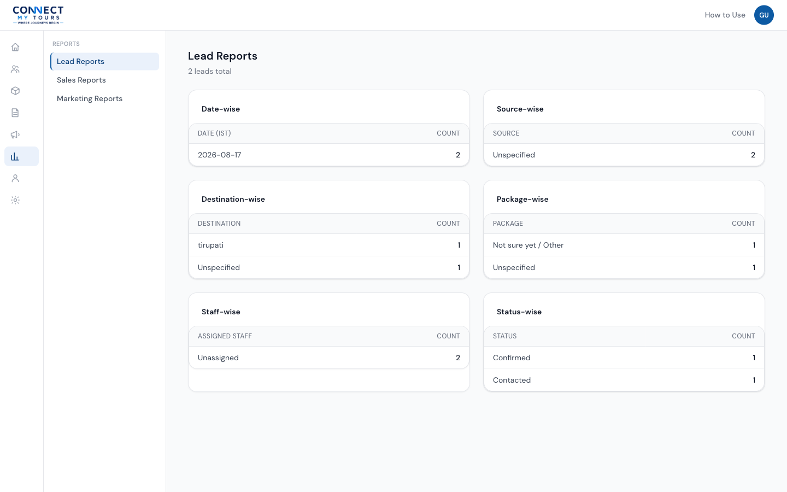
Lead Reports.
Sales Reports
What is it?
Five headline sales numbers: Quotations Sent, Quotations Accepted, Quotations Rejected, Booking Value (excludes cancelled bookings), and Conversion Rate (accepted ÷ sent).
How to access it
Nav rail → Reports → Sales Reports. Requires view_reports.
Marketing Reports
What is it?
WhatsApp Sent/Delivered/Failed counts, a breakdown of the Follow-up Automation pipeline's per-lead states, and a Campaign Performance table (recipients/sent/failed per campaign).
How to access it
Nav rail → Reports → Marketing Reports. Requires view_reports.
Contact Clicks
What is it?
A log of every Call and WhatsApp button click on the public website — from the mobile sticky bar and every other Call/WhatsApp button on the site (Footer, package pages, city pages) — for lead attribution: which page actually drove the contact.
How to access it
Nav rail → Reports → Contact Clicks. Requires view_reports — the same permission as the other Reports pages.
How to use it
- Summary cards at the top show Total Calls, Total WhatsApp Clicks, Total Contact Clicks, and today's count.
- Filter by Action (Call/WhatsApp), Device (Mobile/Tablet/Desktop), and Date range (Today/Yesterday/Last 7 days/Last 30 days).
- The table lists newest first: action, the public page the click happened on, an approximate location (city/region — never an exact address or GPS coordinate), device, browser/OS, and time.
Security
What is it?
Your own account's session and sign-in activity — available to every signed-in user for their own account, regardless of role.
How to access it
Nav rail → Account → Security, or from the header's profile menu.
How to use it
- This device shows your email, browser/OS, a masked IP address, and your last sign-in time.
- Other sessions — click the button here to sign every other browser/device out of your account immediately, useful if you signed in somewhere you no longer trust.
- Recent sign-in activity lists your last 20 sign-in attempts (success or failed) with time, IP, and browser/OS, so you can spot anything you don't recognise.
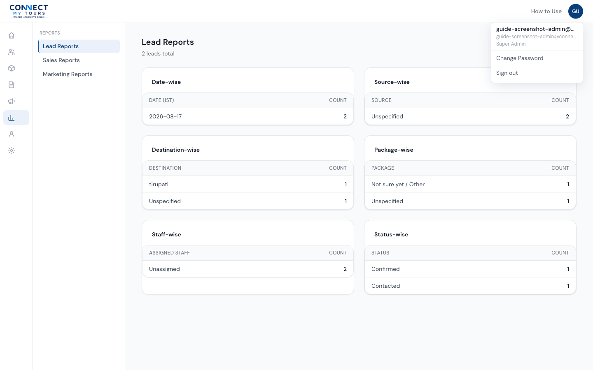
The profile menu, opened from the header avatar.
Users
What is it?
The staff account directory — every person who can sign in to this admin panel, their role, and whether their account is active.
Why do we use it?
Before this existed, creating a staff account or changing someone's role could only be done by directly editing the database. This page makes that a normal, auditable admin action.
How to access it
Nav rail → Settings → Users. Requires manage_users — today that means Super Admin only.
How to use it
- The list shows every account's Name, Email, Role, Status, and when it was created. Search by name or email, or filter by Role or Status.
- Click + Add User to create a new staff account: enter their Full Name, Email, and Role, and click Send Invitation. No password is set by you — an email is sent with a secure link that lets them set their own password, the same mechanism as the sign-in screen's "Forgot password?" flow.
- Click any user to open their account: edit their Full Name, Phone, or Role from the Profile card, and click Save Changes. Email cannot be changed here once an account exists.
- Use Deactivate User / Activate User in the Account card to turn access on or off. Deactivating asks for confirmation, immediately blocks that account from every permission-gated page, and signs out any device they're currently using.
Roles & Permissions
What is it?
A screen for understanding, and for three of the four roles, editing exactly what each role is allowed to do.
How to access it
Nav rail → Settings → Roles & Permissions. Requires manage_roles_permissions — today that means Super Admin only.
How to use it
- Manage by Role (default view): pick a role on the left, then check or uncheck permissions on the right, grouped by area (Core, CRM, Inventory, Quotations, Bookings, Marketing, CMS, Reports). Click Save Changes to apply.
- Permission Matrix: a read-only, full grid of every role against every permission, for a bird's-eye view.
WhatsApp Settings
What is it?
A configuration status page — it shows whether the server has the required WhatsApp/Meta credentials set up, plus reference information for connecting them.
How to access it
Nav rail → Settings → WhatsApp Settings. Requires any one of manage_whatsapp_automation, manage_whatsapp_campaigns, or manage_whatsapp_templates.
How to use it
- API Configuration shows five pills — Configured or Missing — for the API token, phone number ID, app secret, webhook verify token, and cron secret. It shows presence only, never the actual values.
- Integration Endpoints lists the webhook and cron URLs a developer needs when wiring this up in Meta's dashboard or a scheduler.
- Cron Setup shows an example command for triggering the follow-up automation on a schedule.
- Active Templates lists all templates (any status, despite the name) with their Purpose and Status.
Error Logs
What is it?
A viewer for server-side errors captured by the system — from scheduled jobs, the WhatsApp webhook, sign-in, and other background processes — the last 200, newest first.
How to access it
Nav rail → Settings → Error Logs. Requires view_audit_logs.
How to use it
Each row shows a Source badge (cron webhook server_action api_route), a Message, optional Context, and When it happened. Hover a truncated message or context value to see it in full.
view_audit_logs — currently Super Admin and Admin/Manager. Sales Staff and Content Manager accounts will not see "Error Logs" under Settings at all; that's expected behaviour for those roles, not a bug.
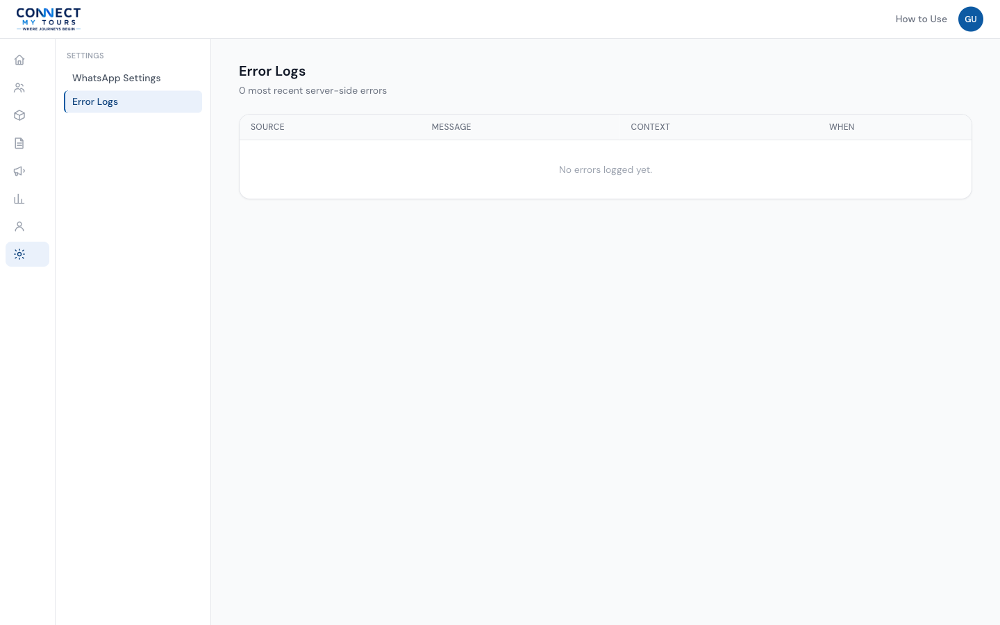
The Error Logs viewer.
Roles & Permissions
Access is controlled by permissions, not just role names — each screen and action checks for a specific permission, and your role determines which permissions you hold. The navigation rail automatically shows only what you have access to; opening a page directly without the right permission shows an "Access denied" message instead of the page's content.
| Role | Description (as configured in the system) |
|---|---|
| Super Admin | Full system access. Automatically granted every permission as it is created. |
| Admin / Manager | Operational management: leads, customers, packages, quotations, follow-ups. |
| Sales Staff | Handles assigned leads, customers, quotations, follow-ups. |
| Content Manager | Manages packages, itineraries, blog posts, FAQs, SEO. |
Common Workflows
New enquiry to confirmed booking
- Enquiry comes in — a Lead is created (automatically from the website, or manually by staff).
- Staff review the lead, set its Priority and Assignment, and start a Quotation from it.
- Add packages and pricing, then send the quotation to the customer.
- The customer opens the link and, once they accept, staff create a Booking from the quotation.
- Staff record payments and move the booking through Pending → Confirmed → Completed as the trip progresses.
Publishing a new website page
- Create the page under Pages — it starts as a Draft.
- Open its Page Builder and add/arrange content blocks.
- Fill in SEO fields if you have access to them.
- Change Status to Published once it's ready (requires
publish_pages).
Troubleshooting
I can't see a menu item I expect to see
The navigation only shows sections and pages your account has permission for. If a colleague sees something you don't, that's most likely a difference in role/permissions, not a bug — see Roles & Permissions, and ask your administrator if you believe you should have access.
I'm locked out after entering my password wrong a few times
After 5 failed attempts for the same account within 10 minutes, sign-in is temporarily blocked. Wait about 10 minutes and try again, or use Forgot password? on the sign-in screen. This is not something an administrator needs to manually clear — it resets on its own.
A WhatsApp message was not delivered
First, check WhatsApp Messages for that lead — if the status shows Failed, the send attempt genuinely did not go through. Then check WhatsApp Settings: if any of the five API Configuration items show Missing, no WhatsApp message can be delivered at all until an administrator configures the missing credential(s) with Meta. As of this guide, this environment has never had those credentials configured, so WhatsApp sending has not yet been verified end-to-end — this is a known, expected limitation rather than something to try to fix yourself. Contact your administrator or developer.
I published a page but the change isn't showing on the website
Confirm the page's Status is actually Published (not Draft). If you're editing the homepage, remember its content lives under Homepage Sections, not a separate settings screen. If you edited a Menu, check that the menu has at least one item and is assigned to the right Location — an empty or missing menu silently falls back to the site's built-in default links.
I added a Package Listing or Destination Listing block and nothing shows
This is expected — see the note under Page Builder. These two block types exist in the builder but are not yet rendered on the public site.
FAQ
Is my data backed up?
ConnectMyTours's database runs on Supabase's hosted infrastructure, which provides its own backup capabilities. The specific backup retention window and recovery process for this project have not yet been independently verified by the ConnectMyTours team as of this guide — please check with your administrator for the current, confirmed backup policy rather than assuming a specific retention period.
Can I delete a lead or booking I created by mistake?
No — leads and bookings are never deleted from the system by design, to preserve a complete history. Instead, move a lead's status to Not Interested, Lost, or Cancelled, or a booking's status to Cancelled.
Why can Sales Staff not see Reports or the Dashboard's numbers?
Reporting is scoped to Admin/Manager and Super Admin because Sales Staff sessions only have visibility into their own assigned leads — showing them a "company-wide" number computed under their own restricted view would be misleading, not just incomplete, so it's hidden rather than shown wrong.
Does the system automatically send WhatsApp messages?
The Follow-up Automation engine and Campaigns feature are both built to do so once WhatsApp/Meta credentials are configured for this environment — see the note at the top of the Marketing section. Until then, any attempted send will log as Failed in WhatsApp Messages.
Glossary
| Term | Meaning |
|---|---|
| Lead | One customer enquiry, the starting point of the pipeline. |
| Quotation | A priced proposal built from packages, sent to a customer. |
| Booking | A confirmed trip, created from an accepted quotation. |
| Customer | A person's contact record, shared across their leads/bookings over time. |
| Package | A sellable tour product with pricing, content, and images. |
| Rack Rate / B2B Rate | Two of a package's price types — the public/standard rate and the trade/partner rate. |
| Page Builder | The block-based editor used to build CMS Pages, including the homepage. |
| Block | One reusable content section inside the Page Builder (e.g. Hero, Gallery, FAQ). |
| Campaign | A bulk WhatsApp send to leads matching a status filter. |
| Permission | A single named capability (e.g. manage_packages) checked to decide what you can see or do. |
| Role | A named bundle of permissions assigned to a staff account (Super Admin, Admin/Manager, Sales Staff, Content Manager). |
| RLS | Row Level Security — the database-level rule enforcement behind every permission check, so access is enforced even if a screen were bypassed. |
Version & Status
Phase: 8
Status: Documentation of current implemented functionality.
This guide describes the ConnectMyTours admin panel as it is actually built and behaves today. It is not a statement that Phase 8 is fully closed, and it is not a claim that the application has been deployed to production. WhatsApp/Meta credentials have not been configured in this environment, so WhatsApp delivery is configured but not verified — see the Marketing section. Database backup retention has not been independently verified — see the FAQ. This guide will be updated as the admin panel's real functionality changes.